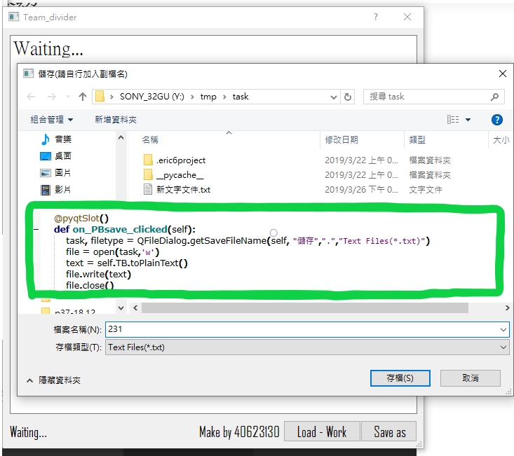
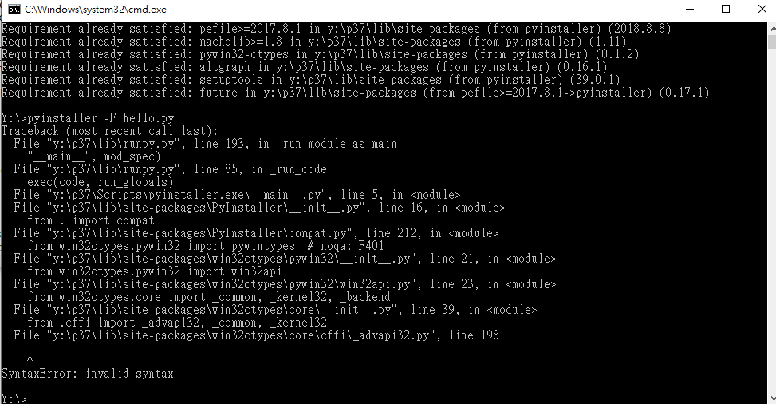
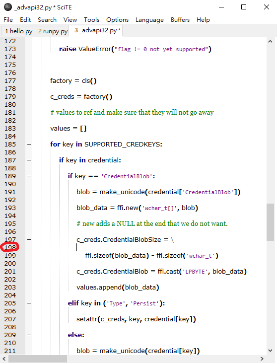
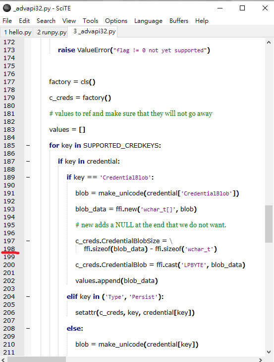
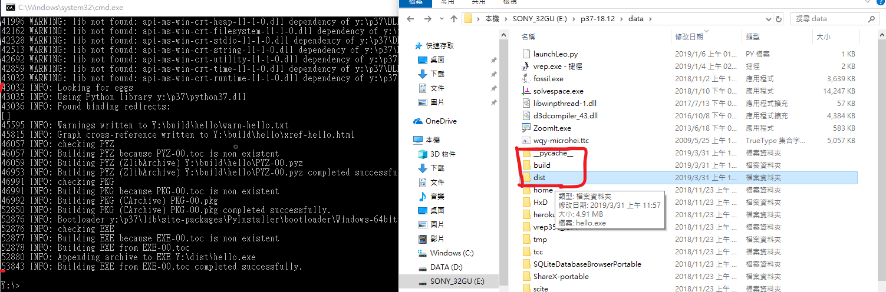
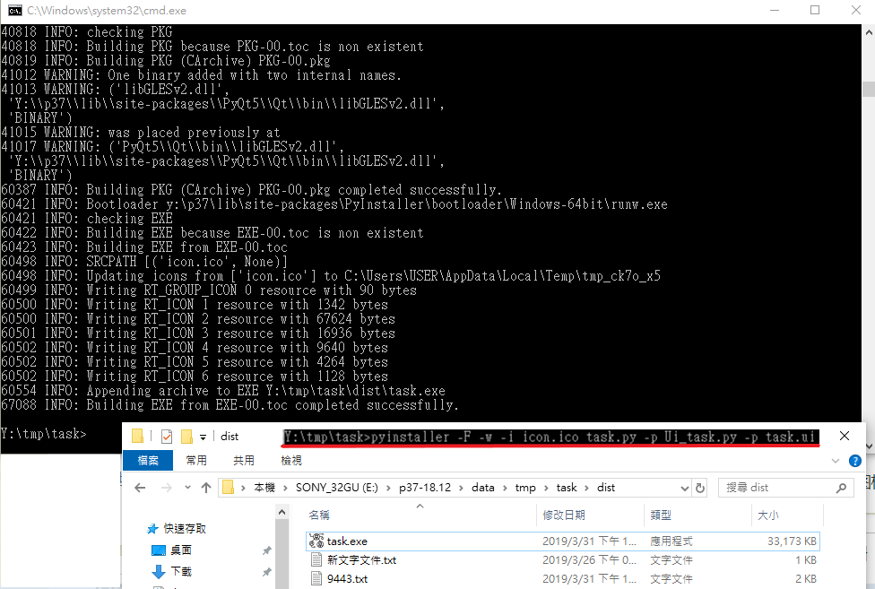
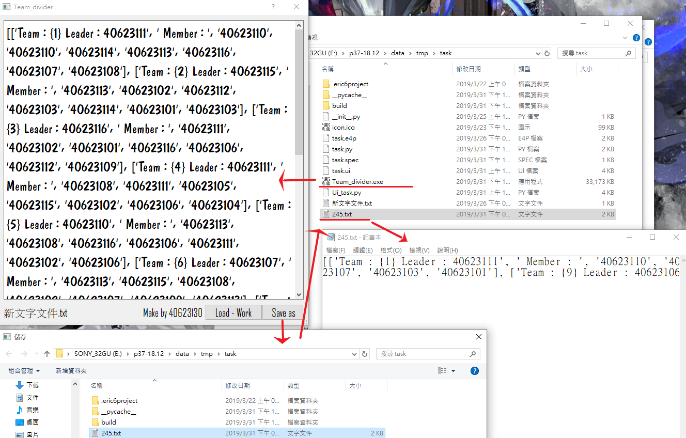

完成啦- 69MB左右-點擊即可下載。
完全沒想到轉成exe檔會大成這樣...
不過上星期到這次改版差了很多,不但整合了項目一與二 , 還修改了save as 按鈕(可用) , 還轉成了exe檔...很難想像因為一個enter換行導致一串的bug , 不過還是成功修改好了。
改版Save as 按鈕成可用code , 並可直接存成.txt檔案

之後利用pyinstaller(官方下載說明頁面)測試看看能否轉py成exe檔案 , 但是明顯的出了幾個bug
(1) cffi 過舊或是未安裝 --->需更新檔案---->pip cffi 就可以了 ( 沒記錯的話
(2)接下來是下方這個 , 黑窗表示 : 語法錯誤

上網查後發現是下方這個.py檔的198行的空白行的問題...

刪除開白行即可

之後就可正常用行囉 , pyinstaller會生成很多檔案而主要的exe檔在dist資料夾中

之後到要轉檔的目錄位置打
pyinstaller -F -w -i 圖.ico 主程式.py -p 其餘程式 -p 其餘程式 -p 其餘程式 -p 其餘程式
以下為pyinstaller常用參數介紹

完成品~
